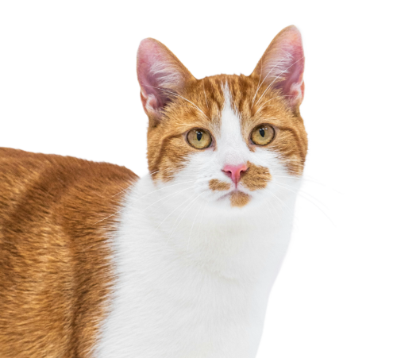

Contacta con nosotros
Haz fácil lo imposible

Muy personal, de tú a tú.
Te ofrecemos todas las facilidades necesarias y disponibles en el seguimiento de tu caso.
Para que no te sientas abandonado en ningún momento del camino.

Mayte Ramos
Fundadora, consultora y catsitter en imiau.es
(+34) 644 18 43 82 info@imiau.es @imiau.es”En este espacio no se juzga a nadie, sino que se analiza objetivamente para mejorar tu día a día y la de tus animales de compañía”.
Si lo prefieres, usa nuestro formulario y te contestaremos antes de 24/48 horas.
Formulario de GoogleEn el formulario te haremos unas preguntas para ayudarte mejor en tu caso y ofrecerte una solución adaptada a ti.
Queremos que lo tengas claro
¿DUDAS? ¡PREGÚNTAME!

TU SERVICIO ES MUY CARO
NO SÉ SI VAN A CUIDAR BIEN DE MI GATO
Puedes confiar en nosotros. Nuestro equipo está formado por profesionales con experiencia en el cuidado de gatos. Nos preocupamos por su bienestar y nos aseguramos de brindarles el mejor cuidado posible.
NO ENTIENDO EL SERVICIO QUE DAIS
Mi profesión consiste en ayudarte a entender tu gato y sus necesidades y mejorar su comportamiento y convivencia en el hogar. Además, si contratas el servicio de Catsitting, cuido de tu gato en tu domicilio, para que no cambie su espacio ni su rutina, evitando estrés.
MI GATO ESTÁ LOCO, NO TIENE SOLUCIÓN
A menudo, los comportamientos exagerados de tu peludo pueden ocurrir por causas de estrés, ansiedad, miedos o causas veterinarias que puede tener origen en diversos factores como por ejemplo: que la casa no esté gatificada, que el arenero no esté en un lugar adecuado, que tenga algún tipo de dolor, etcétera.
¿Cuanto tiempo necesitamos para solucionar mi problema?
No hay un tiempo fijo. Habitualmente los casos pueden ser de 4 a 6 meses, pero también hay otros casos que van a superar el año de terapia. Dependerá de la gravedad del caso y de los tiempos que irá marcando tu gato.
¿Tú podrías recetar medicamentos?
No. Puedo recomendarte algunos medicamentos para tu caso, pero deberá recetártelo un veterinario, bajo su supervisión y responsabilidad.